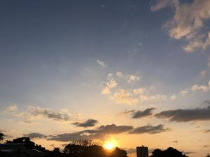
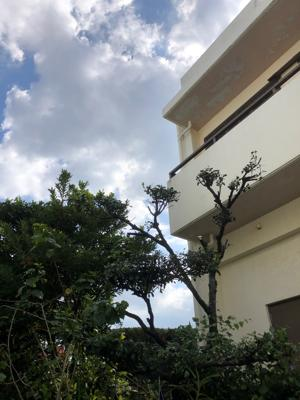
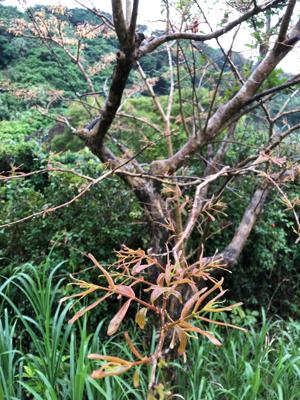

うるがいの話 ある日
最新: 落葉広葉樹【うるがいの話 ある日】とは 一日だけのプログです
『うるがいの話』の最新一日だけのプログで、通信料が少なく経済的だ。カニの画像をクリックすると全ての日付が載る『うるがいの話』サイトを表示します
|
|
【うるがいの話】 うるがい(ｳﾙｶﾞｲ urugai)とは、『もずくがに』の名前でとても大きくなります。 |
|---|---|
|
|
【カミマヤーの話】 猫のことを方言でマヤーといいます。カミマヤー（kamimayaa）とは、神の猫のことです。 |
|
【たながぁの音楽】 たながぁ（ﾀﾅｶﾞｰtanagaa）とは手長えびのことで、何種類かあり大きいのは車 エビぐらいになります。 |

|
【ぶながぁの話】 ぶながー(bunagaa)とは、赤い髪の毛、赤い身体、そして身長は１ｍ２０ｃｍ ぐらい、川の蟹を食べているの目撃された。場所は沖縄県国頭郡大宜味村のと ある村僕の隣近所に住んでいる爺さんから、聞いた話です。 |
|
|
【ギーマの話】 ギーマ(giima)とは、山原の里山に咲くスズランに似た、 花を付けます。実は食べられます、 気が付くと口の周りが紫になっています。 |
2022年04月05日 (火）落葉広葉樹
16:17
 
葉が低温によってかれて落ち，１年のうちの一時期葉をもたない休眠状態にな
った樹木を落葉広葉樹（らくようこうようじゅ）というらしい。ジョギングを
していると夏は葉が茫々としている木が、全く葉がない状態になることに気付
いた。還暦を過ぎて初めて知ったことで、少し驚く。普段みている筈の景色な
のによく見ていなかったことになる。よく観察すると、モミジと同じである。
写真は、若葉を写しているがモミジの若葉と同じである。白い粉が車に溜まり
過ぎてこれはヤバイと昨日、黒木の若葉を剪定した、今日は白い粉は、殆どな
い。原因は黒木の若葉だったことが分かった、これからは若葉が出る時には剪
定することにする。剪定のとき気付いたのだが、ホルトの木の花も咲いて花粉
をつけていた。白い粉の原因を見極めるため、とりあえずホルトの木は、剪定
せず放置した。車にわずかに白い粉が積もっていたが、ホルトの花粉かも。黒
木は私の親父が植えた木で、ホルトの木はヨメのお父さんが植えたものである
。彼らは、白い粉の被害がおこることは考えてもいなかっただろう。

１６時０７分 ビットコインの総資産 ￥１６、５７８↑